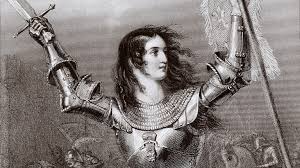

Meet the Legends
Explore more than 25 biographies across multiple categories — sports icons, innovators, leaders and cultural legends. Click "See more" on any card to read the full biography.

Babar Azam
Cricket • Pakistani Captain

Virat Kohli
Cricket • Indian batsman
Sachin Tendulkar
Cricket • Legendary batsman
Rohit Sharma
Cricket • Captain & opener
AB de Villiers
Cricket • Innovator
David Warner
Cricket • Aggressive opener
Lionel Messi
Football • Forward
Cristiano Ronaldo
Football • Forward
Marta Vieira
Football • Women's football icon

Pelé
Football • Global legend
Albert Einstein
Science • Physicist
Marie Curie
Science • Chemist & physicist
Isaac Newton
Science • Mathematician
Rosalind Franklin
Science • DNA research
Nelson Mandela
Politics • Leader & activist

Mahatma Gandhi
Politics • Nonviolent leader
Winston Churchill
Politics • Wartime leader
Margaret Thatcher
Politics • Prime Minister
Meryl Streep
Entertainment • Acting legend
Beyoncé
Entertainment • Performer & icon
Leonardo DiCaprio
Entertainment • Actor
Audrey Hepburn
Entertainment • Timeless icon
Cleopatra
History • Ancient ruler

Alexander the Great
History • Conqueror

Joan of Arc
History • Heroine

Genghis Khan
History • Empire builder